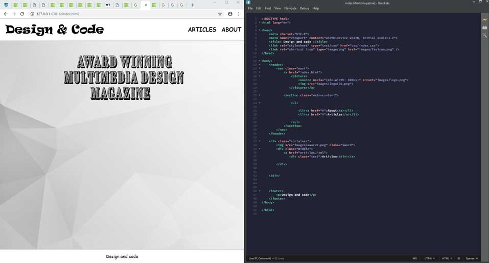

How to improve your CSS skills
{kind=link}
Source
Most people say, that CSS is an easily comprehensible language, because it is very straightforward, and they are not wrong. However, this does not indicate that it is easy to implement or easy to write. The journey from getting your hands on the basics of CSS to know it proficiently is not always a cakewalk and can be demanding. Therefore, it can take a long time to master CSS after you learn it. As with all skills, CSS skills also get better with practice. So, here I will share some tips to help you improve your skills to work with CSS.
Build your own website
The best way to begin your attempt to master CSS is to build your own website. Although it is not an innovative idea, it is the one which is easily attainable. If you can successfully build a website for yourself, perhaps around your portfolio, or anything relevant to your interests, it would give you the first-hand experience of using CSS for a real-life project. This will provide you some exposure in coding.
This will offer you the context and foundation in which all of your other learning will be built on. Take your own time and focus on completing the website. When you solve your own problems, learning will come organically.
Practice, practice, practice
It is essential to indulge in intentional practice. The kind of quality (i.e. practice with willingness) of your practice is as important as the amount of quantity (i.e. the time you dedicate) of your practice. Your practice should not be aimed at something which is not relevant or far too relevant as per your skill sets.
Practicing what you already know is not motivating and can become tedious. Again, working on something that is not within your knowledge is also challenging and can seem to be discouraging. Therefore, the best choice is practicing what is just a bit out of your comfort zone.
Take part in a Bootcamp
Going out and searching for opportunities to build real websites demands a lot of effort and takes time, which sometimes reduces your time to practice. However, as I have mentioned earlier, practicing is essential to improving your CSS skills.
Therefore, a feasible option to maintain your practice, as well as gain exposure to real-life scenarios, is to attend a design or development bootcamp. The bootcamps provide you with the projects to build real websites besides offering a well guided curriculum, and a group of like minded people or peers to work around as well.
Bootcamps helps you to work on your communication/teamwork skills. This is important because these skills facilitates you to get a job as a designer or developer. Moreover, learning on your own can be taxing and can make it challenging to practice.
Bootcamps may appear expensive and attending as per the location of bootcamp can be a obstacle. However, if it is economically possible, I highly recommend to attend a Bootcamp.